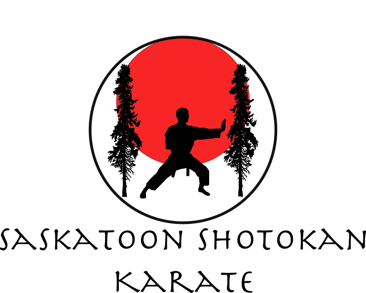

Welcome to Our Dojo
Thank you for visiting our website!
We offer martial arts training in Shotokan Karate, emphasizing traditional karate principles as well as developent of physical ability. Physical exercise strengthens the body, while traditional principles promote self-confidence, discipline, and respect. We train both the body and mind for continuous self-improvement.
Karate places emphasis on individual progress. This provides an activity for physical and mental development, regardless of age or ability of the practitioner. We offer a unique opportunity for family members to train and develop alongside one another.
